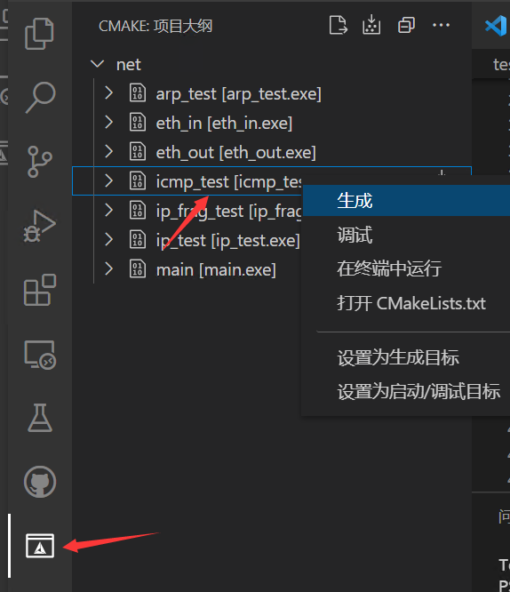
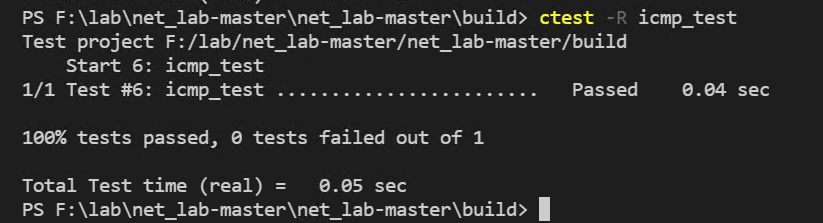

1. 实 验目的
熟悉ICMP数据包格式，明确各个字段的含义与作用。
掌握ICMP数据包的的发送和接收处理过程，理解其中的关键机制和环节。
2. 实验任务
在完成协议栈之IP协议的基础上，编写ICMP报文的发送、接收函数，使其能够发送和接收ICMP数据报文，并且能通过实验评测系统的测试。
3. 实验原理
3.1. ICMP协议概要
从之前的实验我们了解到，IP 协议的主要目标是让数据包能够到达最终的目标主机。然而，在实际的网络通信中，仅仅依靠 IP 协议是远远不够的，还需要一系列支持 IP 的相关技术才能实现有效的通信。例如，IP 协议本身并没有为终端设备提供一种直接的方式来发现那些发往目的地址失败的 IP 数据包，也无法对通信过程中出现的问题进行诊断。
为了解决这些问题，Internet 控制报文协议（Internet Control Message Protocol，ICMP）被引入并与 IP 协议结合使用。ICMP 的主要作用是提供与 IP 协议层配置和 IP 数据包处理相关的诊断和控制信息。
ICMP 具有多种重要功能，主要包括：
确认 IP 包是否成功送达目标地址，帮助用户了解网络的连通性。
通知发送过程中 IP 包被废弃的具体原因，便于进行故障排查。
协助改善网络设置，优化网络性能。
ICMP 协议在许多网络管理命令中都有广泛应用。例如，ping 命令使用 ICMP 回送请求和应答报文来测试主机之间的连通性；路由分析诊断程序 tracert 使用 ICMP 时间超过报文来跟踪数据包的路由路径。
3.2. ICMP报文格式
ICMP 报文是封装在 IP 数据报内进行传输的。ICMP 头部固定为 8 个字节，所有的数据都紧跟在 ICMP 头部之后。ICMP 报文的具体格式遵循 RFC777 和 RFC792 规范。

ICMP 的消息大致可以分为两类：
错误消息（差错报文，error message）：用于通知通信过程中出现的错误原因。
查询消息（询问或信息报文，information message）：主要用于网络诊断。

3.2.1. ICMP差错报文结构
差错报文会保留 IP 数据包中的前 8 个字节，这是因为 TCP、UDP 报文的前 8 个字节都包含源端口号，接收 ICMP 差错报文的模块可以根据这些信息将其与某个协议和用户进程联系起来。其中，协议类型可以根据 IP 数据报首部中的协议字段来判断，用户进程则可以根据包含在 IP 数据报前 8 字节中的 TCP、UDP 报文首部中的端口号来确定。

3.2.2. ICMP查询报文结构
由于本协议栈只处理 ICMP 查询报文中的回显报文，因此下面仅介绍回显报文的格式：
类型（Type）：用于说明ICMP报文的作用及格式；
代码（Code）：于详细说明某种ICMP报文的类型；
16位校验和（Checksum）：涵盖了整个报文，其校验和的计算方法和IP协议校验和算法是一样的；
标识符（Identifier）：如果是ICMP请求报文，该字段在Linux/macOS中用的是进程ID。如果是ICMP应答报文，则只需拷贝来自ICMP请求报文的标识符字段；
序列号（Sequence number）：如果是ICMP请求报文，该字段在Linux/macOS中是从0递增的，每个进程独立。如果是ICMP应答报文，则只需拷贝来自ICMP请求报文的序列号字段；
数据（Optional data）：如果是ICMP请求报文，该字段包括时间戳以及一串填充数据。如果是ICMP应答报文，则只需拷贝来自ICMP请求报文的数据字段。

以下是常见的ICMP报文“类型”和“代码”字段用途。
TYPE |
CODE |
Description |
|---|---|---|
0 |
0 |
查询报文：Echo Reply——回显应答（Ping应答） |
3 |
0 |
差错报文：Network Unreachable——网络不可达 |
3 |
1 |
差错报文：Host Unreachable——主机不可达 |
3 |
2 |
差错报文：Protocol Unreachable——协议不可达 |
3 |
3 |
差错报文：Port Unreachable——端口不可达 |
8 |
0 |
查询报文：Echo request——回显请求（Ping请求） |
11 |
0 |
差错报文：TTL equals 0 during transit——传输期间生存时间为0 |
12 |
0 |
差错报文：IP header bad (catchall error)——坏的IP首部（包括各种差错） |
4. 代码实现与检测
同学们要仔细研读本实验给出的代码框架，完成 src/icmp.c 文件中 icmp_in() 函数、icmp_unreachable() 函数以及 icmp_resp() 函数的编写。
4.1. ICMP数据报输入处理
同学们需自行实现 icmp_in() 函数，其功能实现步骤如下：
Step1 报头检测：
首先检查接收到的数据包长度。若包长小于 ICMP 头部长度，表明数据包不完整，将其丢弃，不做后续处理。
Step2 查看 ICMP 类型：
接着查看该 ICMP 报文的类型，重点关注是否为回显请求类型。
Step3 回送回显应答：
如果该报文的 ICMP 类型是回显请求，则调用 icmp_resp() 函数回送一个回显应答（ping 应答）。
4.2. 发送ICMP响应报文
同学们需要自行实现 icmp_resp() 函数，其功能实现步骤如下：
Step1 初始化并封装数据：
调用 buf_init() 函数来初始化 txbuf。之后，封装 ICMP 报头和数据，其中数据部分直接拷贝来自接收的回显请求报文中的数据，以保证信息的一致性。
Step2 填写校验和：
ICMP 的校验和计算方法与 IP 协议校验和算法相同。按照此算法计算出校验和，并将其填写到相应位置，确保报文在传输过程中的完整性。
Step3 发送数据报：
调用 ip_out() 函数将封装好且填写了校验和的 ICMP 数据报发送出去。
4.3. ICMP数据报输出处理
本实验仅要求输出 icmp unreachable 的差错报文，且仅支持如下差错代码：
typedef enum icmp_code
{
ICMP_CODE_PROTOCOL_UNREACH = 2, // 协议不可达
ICMP_CODE_PORT_UNREACH = 3 // 端口不可达
} icmp_code_t;
同学们需要自行实现 icmp_unreachable() 函数，其功能实现步骤如下：
Step1 初始化并填写报头：
首先调用 buf_init() 函数来初始化 txbuf。然后，按照 ICMP 协议规范填写 ICMP 报头首部，包含类型、代码等关键信息。
Step2 填写数据与校验和：
接着，填写 ICMP 数据部分，该部分要包含 IP 数据报首部和 IP 数据报的前 8 个字节的数据字段。完成数据填写后，使用与 IP 协议相同的校验和算法计算校验和，并将其填写到相应位置。
Step3 发送数据报：
调用 ip_out() 函数将封装好且填写了校验和的 ICMP 差错数据报发送出去。
4.4. 实验自测
ICMP 自测需要通过 icmp_test 测试。


接着，打开 VSCode 的终端，进入 build 目录，输入 ctest -R icmp_test 进行自测。

✅ 成功：终端显示 100% tests passed
❌ 失败：根据错误日志排查问题，可参考 Eth协议调试指南
4.4.1. GDB调试
本实验支持使用GDB调试，请参考 Windows开发环境搭建 中的“Windows下编译和调试”